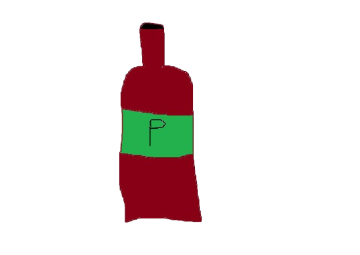

Pálinka:
0

automation / sec
Nerf: 100k Pálinka után csak 1.5x effect.
Upgrade 1
Pálinka duplázó
Duplán, mert úgy finomabb.
Ár: 20 Pálinka
Jelenlegi boost : x0
Upgrade 2
x1.1 Pálinka
Később talán hasznos lesz.
Ár: 1500 Pálinka
Jelenlegi boost : x0
Upgrade 3
Pálinka saját magát boostolja.
Nagy számok, kevés a biztosítás.
Ár: 20000 Pálinka
Jelenlegi boost : x0
Upgrade 4
Kevesebb kattintás cooldown
Gyorsabb Pálinka, erősebb hatás.
Ár: 10000 Pálinka
Jelenlegi effect : 0.2s
A Jagermeister reset: Ha rányomsz, akkor minden előző progressed elfog veszni, viszont egy mini game unlockolodni fog amit ha végigjátszol kapsz jutalmat amivel további fejlesztést tudsz venni
N T M J E D N T I G A M E
Nem Tudom Milyen Jatek Ez De Nincs Több Időm (NTMJEDNTI) pontok : 0
Upgrade 1
Még több?....
Nem elég, úgy néz ki.
Ár: 10 NTMJEDNTI
Jelenlegi boost : x0